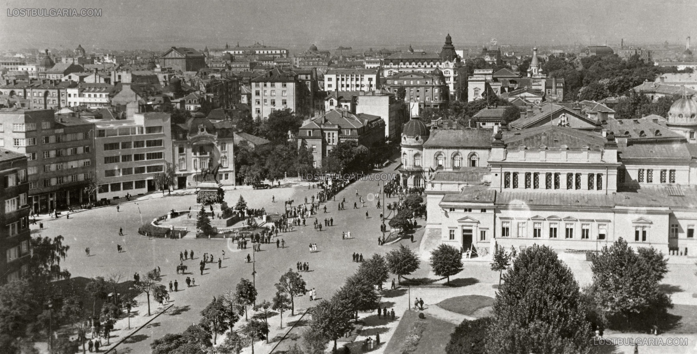
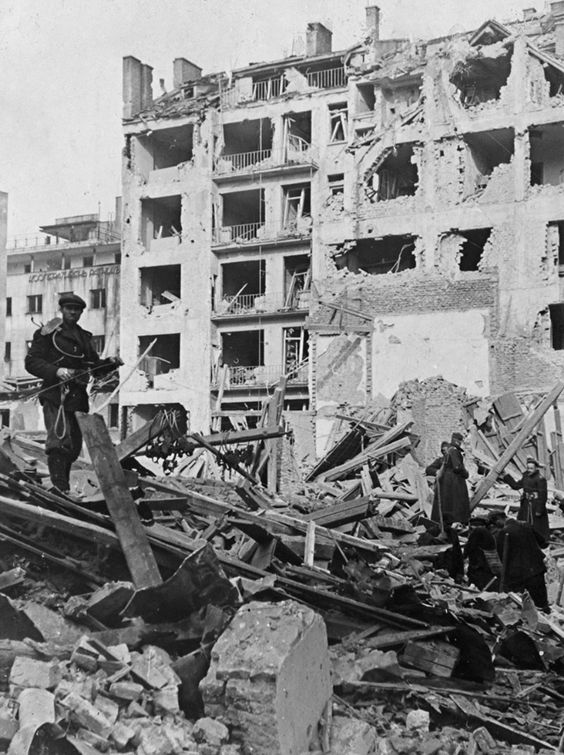
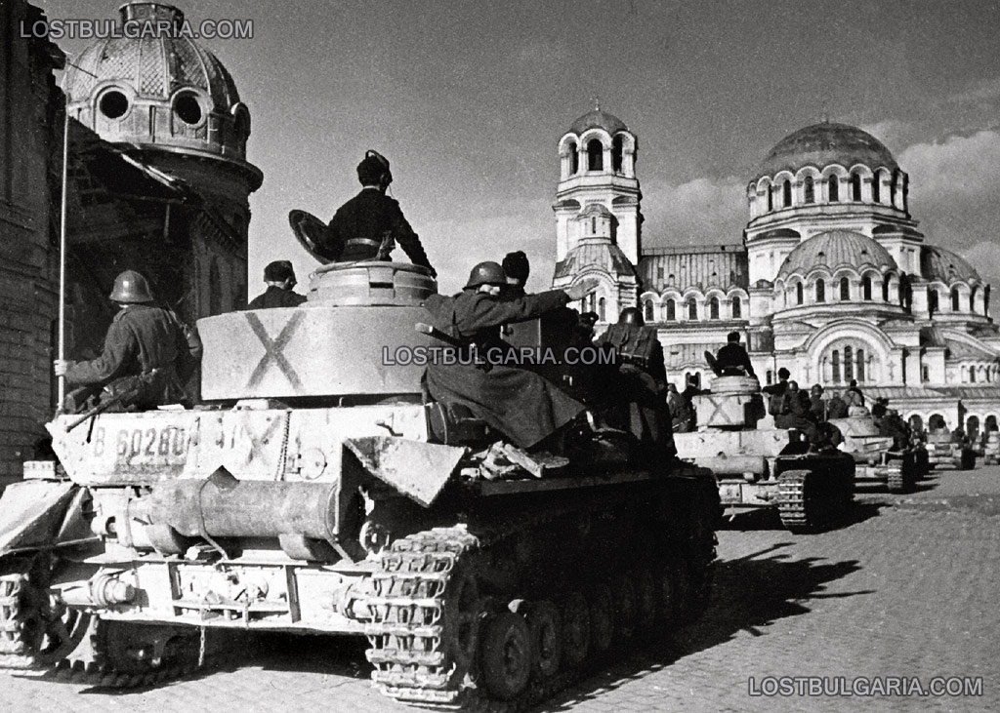
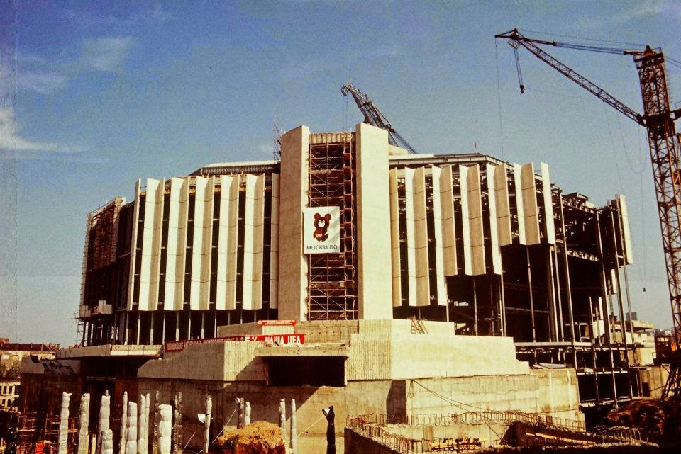
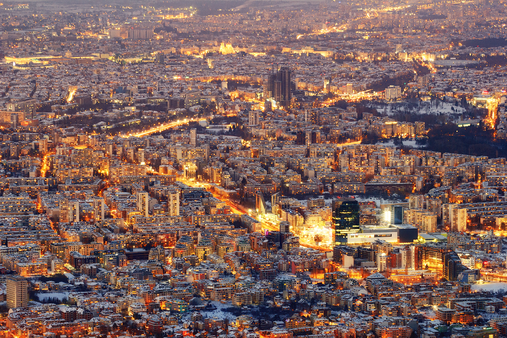
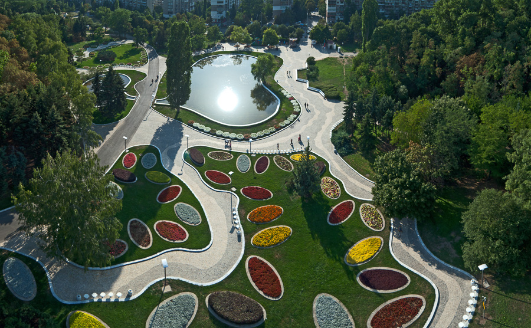

София

Столицата носи името София от 15 век , когато османските власти утвърждават новото християнско име-София.До тогава е носила името Сердика.През вековете София винаги е била в центъра на случващото се в страната , поради тази причина е избрана и за столица, а също така и заради централното и важно местоположение.На 20 октомври 1878 г. от Пловдив в София се премества седалището на Временното руско управление, а на 3 април 1878 г. (22 март 1879 г. стар стил) по предложение на Марин Дринов, Учредителното събрание в Търново, избира София като център на българските земи (и бивш главен град-резиденция на севастократора отговарящ за западните български земи) за столица на Княжество България. Следващия 4 април е обявен за празник на София.
От 4 април 1878 г. до днес София е столица на Третата българска държава.

София под натиска на Втората Световна Война

През септември 1939 г. избухва Втората световна война. Бушуващият световен пожар не подминава и Балканите.
Със своето важно стратегическо положение България е желан съюзник и за двете воюващи коалиции.
Стремежът на цар Борис III и правителството на Богдан Филов е да бъде запазен българският неутралитет, докато е възможно.
В началото на 1941 г. Германия предприема сериозен дипломатически натиск върху България за присъединяването на последната към Тристранния пакт. Възможностите за лавиране пред българското правителство са сведени до минимум и от присъствието на 500-хилядна германска армия на северната българска граница.
При тези обстоятелства България е поставена пред дилемата: или да се присъедини доброволно към силите на Тристранния пакт, или да бъде окупирана.
Избрана е първата възможност и на 1.3.1941 г. във Виена министър-председателят Богдан Филов подписва протокола за присъединяването на България към пакта.

Социализмът

Политическата промяна, настъпила след септемврийския преврат 1944 г.,
открива епохата на прехода от капитализъм към социализъм в България.
Установяването и утвърждаването на народно демократичната власт и
изграждането на социалистическите икономически отношения съставят
основното съдържание на тази епоха. Новите социалистически икономически
отношения и новата организация на общественото производство известно
време са преплетени и съжителстват със старите икономически отношения и
със старата организация на общественото производство.
Модерна София

Днес София е един модерен, съвременен и проспериращ град, който не случайно е столица на България.
За града може да се говори много , но е най-добре да се види. Пълен е с търговски центрове, големи предприятия, работещи денонощно, хиляди ресторанти , магазини и развлекателни клубове са пръснати на територията й. Можете да намерите всичко от което имате нужда. Има защо да я наричаме модерна.Има над 15 университета ,академии и колежи за с най-разнообразни факултети и специалности, което събира огромна част от младото население на страната, и не само. Това дава на града огромен просперитет и възможности за постоянно надграждане.
